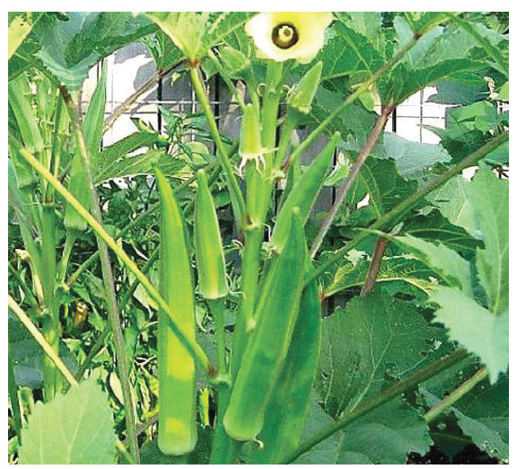
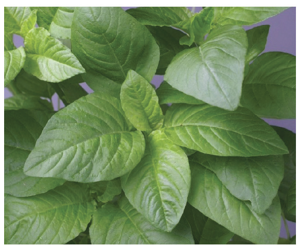

(c) Provide employment: Production of horticultural crops involves intensive operations carried out from the initial point of production to final consumption (value chains). This creates employment for the people involved in carrying out those operations.
(d) Stimulate industrial growth: Most horticultural crops provide raw materials for processing and value addition in industries including beverage industries.
(e) Provide business opportunities: There are many chances to start a business in the horticultural-related industry. You can do this by working directly with businesses that are part of the crop production process. This is possible as long as there are people who want to buy the produce and their by-products. Alternatively, you can start a business that helps the main horticultural-related businesses to work better. You can identify a business opportunity in horticultural crops by finding out the problems that people have in the crop value chain and coming up with solutions that can make one earn money.
(f) Conserve soil: Apart from beautifying environment, crops such as ornamental shrubs and grasses in the landscape provide adequate soil cover. This protects the soil from wind and water erosions.
Types of horticultural crops
The following sections of this chapter present the major types of horticultural crops namely vegetable, fruit, spice, and ornamental crops.
Vegetable crops
These are crops for which the whole plant, leaves, stems, fruits, roots, seed or pods are used as food, normally mixed with other foods. Some of these crops are shown in Figures 3.1 to 3.22.

